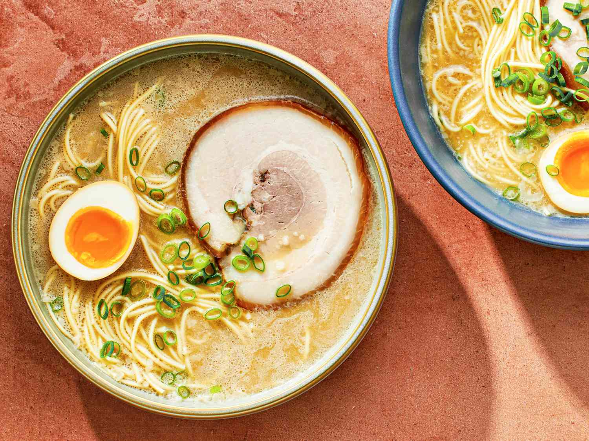

Ramen recipe



Get back to homepage!
About Ramen
Ramen is a Japanese noodle dish. It consists of Chinese-style wheat noodles served in a broth,
common flavors are soy sauce and miso, with typical toppings including sliced meat, nori, menma, and scallions.
Ramen has its roots in Chinese noodle dishes. Nearly every region in Japan has its own variation of ramen,
such as the tonkotsu ramen of Kyushu and the miso ramen of Hokkaido. Personally, I prefer halal ones!
Ingredients
-
Ramen noodles - our classic Maruchan package is all we need, sans the seasoning!
-
Garlic and ginger
-
Broth -chicken or veg.
-
Dried shiitake mushrooms
-
Veggies - like carrots or kale
-
Toppings - all your favorite toppings like some panko, egg, chili oil, etc.
Process of making Ramen
Here are some instructions to make Ramen at home easily!
-
Stir-Fry Aromatics : garlic and ginger, what a delicious duo. This is where the flavor is, friends.
-
Make Your (Easy!) Broth : add some chicken broth and dried shiitake mushrooms for some umami punch.
-
Add Noodles : cook your noodles right in the broth with some scallions (more flavor, please!).
-
Add Veg : thinly sliced kale, shredded carrots, whatever you'd like! Cook until just tender.
-
Top It Off : add some crunchy panko crumbs, a soft-boiled egg, chili oil,
hot sauce, sesame oil, and/or soy sauce, whatever your heart desires.
Top Tips for Cooking Ramen
-
Go with Miso for Your Broth
-
Toss an Egg in Your Ramen
-
Do not Hesitate to Add Veggies
-
Get Your Dose of Protein
-
Sauce Things Up
-
Broil the Noodles
All these informations above are takes from
this and this websites!